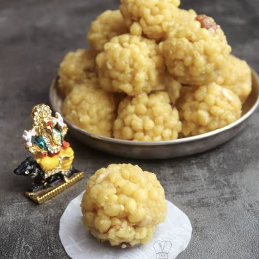

A pinch of baking soda (optional, for crispy boondi)
Oil or ghee for deep frying

Instructions:
Prepare the batter –
Mix besan with water to make a smooth, flowing batter (not too thick or thin). Add a pinch of baking soda for crispiness.
Fry the boondi –
Heat oil/ghee in a pan. Pour the batter through a perforated ladle (jhara) to form tiny droplets. Fry until golden but not too crispy. Drain excess oil
Make sugar syrup –
Boil sugar and water until it reaches 1-string consistency (when you pinch a drop between fingers, it forms a string). Add cardamom powder
Mix boondi & syrup –
Add fried boondi to the warm syrup, mix well, and let it absorb the syrup for 10-15 minutes.
Shape laddus –
Add ghee and chopped nuts, mix well, and shape into round laddus while the mixture is still warm. Let them set before serving.
పిండిని సిద్ధం చేయండి-మృదువైన, ప్రవహించే పిండిని తయారు చేయడానికి నీటితో బేసన్ను కలపండి (చాలా మందంగా లేదా సన్నగా ఉండదు) పెళుసుగా ఉండటానికి ఒక చిటికెడు బేకింగ్ సోడా జోడించండి.
బాణలిలో నూనె వేడి చేయండి. చిన్న బిందువులను రూపొందించడానికి ఒక రంధ్రాల లాడెల్ (ఝరా) ద్వారా పిండిని పోయండి. బంగారు రంగు వచ్చే వరకు వేయించండి, కానీ మరీ క్రిస్పీగా ఉండకూడదు. అదనపు నూనెను తొలగించండి
చక్కెర సిరప్ తయారు చేయండి-
చక్కెర మరియు నీటిని 1-తీగ స్థిరత్వానికి చేరుకునే వరకు ఉడకబెట్టండి (మీరు వేళ్ళ మధ్య ఒక చుక్క చిటికెడు చేసినప్పుడు, అది ఒక తీగను ఏర్పరుస్తుంది) ఏలకుల పొడి జోడించండి
వేడి సిరప్కు వేయించిన బూందీని జోడించండి, బాగా కలపండి మరియు 10-15 నిమిషాలు సిరప్ను గ్రహించనివ్వండి.
నెయ్యి మరియు తరిగిన గింజలను జోడించి, బాగా కలపండి మరియు మిశ్రమం వేడిగా ఉన్నప్పుడు గుండ్రని లడ్డు ఆకారంలో ఉంటుంది. వడ్డించే ముందు వాటిని అమర్చండి.